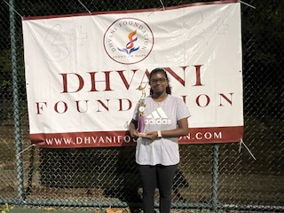

Achievements
Tennis Tournament Winner
21 August 2025 - Won 1st place in the Dhvani Tennis Tournament and raised money for charity.

Scholar Athlete Honor Award
Awarded by Parkway Central High School for achieving a 4.286 GPA while participating in interscholastic Girls Tennis (2024-2025 & 2025-2026).